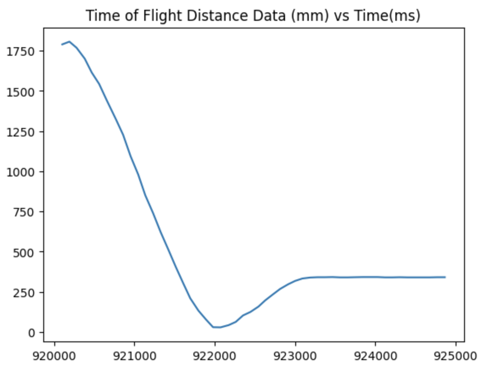

Lab 7: Kalman Filter
In this lab, I implemented a Kalman filter for my robot. The Kalman filter supplements sampled ToF sensor values in order to achieve more granular data, which can be use to execute more precise movement control. The goal is to find the optimal combination of ToF data and position prediction based on pwm input to find the most precise estimate of the robot's actual position. With this increased control, the robot will be able to speed more quickly towards the wall while still stopping at precisely the 1 ft setpoint distance.
 In this model, let's define matrix A as the square matrix with the -d/m term, and matrix B as the [0, 1/m] matrix.
These matrices involve the d and m coefficients, which represent the drag and momentum of the robot as it moves.
The equations for d and m are as follows:
In order to find the values of drag and momentum for my robot, I triggered a step response and measured the ToF sensor readings and PWM
input as the robot moved. I drove the robot at a PWM of 80, since that was the approximate speed it drove during PID in the previous lab.
I then plotted graphs of the position (u), pwm, and velocity (x') of the robot:
In this model, let's define matrix A as the square matrix with the -d/m term, and matrix B as the [0, 1/m] matrix.
These matrices involve the d and m coefficients, which represent the drag and momentum of the robot as it moves.
The equations for d and m are as follows:
In order to find the values of drag and momentum for my robot, I triggered a step response and measured the ToF sensor readings and PWM
input as the robot moved. I drove the robot at a PWM of 80, since that was the approximate speed it drove during PID in the previous lab.
I then plotted graphs of the position (u), pwm, and velocity (x') of the robot:


From these graphs, I can determine the steady state velocity, which is the (peak) velocity at which the robot stops accelerating, and the 90% rise time, which is the time it takes to reach 90% of the steady state velocity. These values are then used to calculate drag and momentum using the previous equations.
Steady state velocity (ẋ) = 1800 mm/s
90% rise time (t0.9) = 1.5 s
Using the above values and the equations for drag and mass, the following calculations are performed. In the drag equation, the value of u is assumed to be 1 in accordance with the lecture. As a result, we get that d = 0.000555, and m = 0.00326.
Drag (d) = u / ẋ = 1 / 1800 = 0.000555
Mass (m) = -dt0.9 / ln(1-0.9) = -0.0005 * 1.5 / ln(1-0.9) = 0.00326
Using the above heuristic, I calculated the following parameter values which allowed my robot to quickly move towards the wall but stop before collision, adjusting to be around 304cm from the wall.
k_p = 0.08
k_d = 0.2
k_i = 0.125
In my pid function, I added deadband caps so that if the pwm being sent was too low for the motors to actually turn, I simply raised them to the minimum driving pwm. I also capped the maximum pwm value at 255 since that is the maximum duty cycle of the motors. Below is a compilation of videos I took throughout the process of adjusting the PID parameters. I start out by turning up the P and D terms, then decreasing them and adding the I term so that the robot can stop short of the wall and correct its position.
